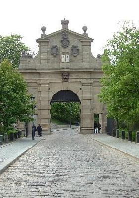

VYSEHRAD
Escarpé le talus et basse la courtine.
L'herbe au glacis qui pousse et le chemin qui va
Par un parfum de pré que l'averse lava,
Et n'est ville ni champ ce lieu que temps pâtine.
Nous passâmes la douve où la voûte s'obstine
A figurer un fort et le clocher leva,
De cimes combattu, un index qui creva
L'horizon belliqueux d'une larme argentine.
Sur les blocs des défunts dressaient leur geste nu
Les marbres peuplant la lice qui ne connut
De bataille sinon ouvrir aux débonnaires
Promeneurs la lecture, et le pleur contenu,
Des dalles par les fleurs et les myrtes, où n'errent
Que, débris, des grands noms échoués sous les pierres.
Michel Galiana (c) 2005
VYSEHRAD
Steep talus, low curtain, glacis covered with weed.
And a meandering path smelling of meadow
Which by the pouring rain was washed a while ago,
And this time-polished place is neither town nor field.
We crossed the moat over which stubborn vaults of stones
Try to figure a fort and the steeple pointed
To reluctant heights a forefinger that punctured
These warlike surroundings with its silvery tones.
On the stone slabs the dead displayed their bare gesture,
Marble coated the lists where no battle ever
Took place except for the easy-going purpose
Of providing with held-in tears and wise lecture
The wanderer reading, among myrtle and rose,
Shattered here, those great names that casual graves enclose.
Transl. Christian Souchon (c) 2005
Note :
Le cimetière de Vysehrad accueille les personnalités éminentes
de la Bohème. C'est ici que sont enterrés les compositeurs
Antonin Dvorak et Bedrich Smetana. Dans un impressionnant
monument commun appelé Slavin reposent d'autres célébrités.
Parmi elles, Alphonse Mucha, le fameux peintre tchèque
"Art nouveau"..
|
The cemetery of Vysehrad is the burial ground for many
famous and important Czech people. Here is the grave of
composers Antonin Dvorak and Bedrich Smetana.
In one impressive common grave, called Slavin, many others
were buried. Among them, Alphons Mucha, the famous
Czech Jugendstil painter.
|
Listen to "Visehrad" in English